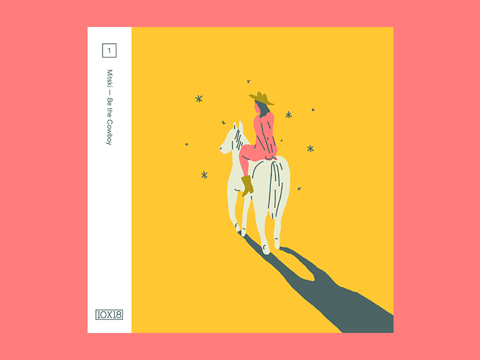

Mitski Miyawaki is a 29-year-old Japanese-American singer and songwriter; after enrolling into a film college she decided to take the musical path instead, over the years she recorded and self-released her first two albums, and later on, was nominated and won the Libera awards for the music video of the year.
The music that Mitski crafts is very raw and un-generic, but still finds a way to reach people, and I think that's where a lot of the success comes from; her passion for music is evident in the song "geyser" where she seems to be writing about a person that she loves, but then it is revealed that the symbol of love isn't a person, but its music itself.
Mitski has also revealed that she used to move a lot because of her father's career, she always felt like she was the new girl in town, and this message of loneliness and alienation comes across in a lot of her music, I feel like I can relate to being the new kid because I would switch schools a lot, and I find it inspiring that she turned to music as a way to find herself, I am on the same journey at this point in my life.
BE THE COWBOY

mistki be the cowboy
The message that resonates with me the most is from the album titled "Be the cowboy"
When asked what the name of the title means she responded by talking about her experience as an Asian woman, saying that she feels the need to apologize just for walking into a room.
She used the phrase “be the cowboy" as a mantra to herself.
The cowboy is a symbol for a soaring spirit, an icon of self-reliance, arrogance, and independence, it is disruptive, unapologetic, and most importantly, free. this mantra is an important one to have because, in times of uncertainty and insecurity, we all need to remind ourselves every once in a while, to be the cowboy.